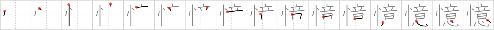

憶
← →
recollection

Reading:
On-Yomi: オク
Heisig story:
State of mind . . . idea.
Koohii stories:
1) [raulir] 29-4-2006(234): Recollection is about bringing ideas back to your mind.
2) [dingomick] 9-8-2007(103): Data's recollection powers are unparalled. He never loses a single idea.
3) [AdamLeliel] 9-8-2008(78): I have no recollection of my state of mind from last night, dude… I must have been drunk or something. Do you have any idea what I did last night, man?
4) [vicnet] 20-8-2009(26): Recollection is the state of mind where one brings ideas back in one's mind.
5) [jabberwockychortles] 31-1-2010(10): Recollection is a state of mind where old ideas are contemplated.